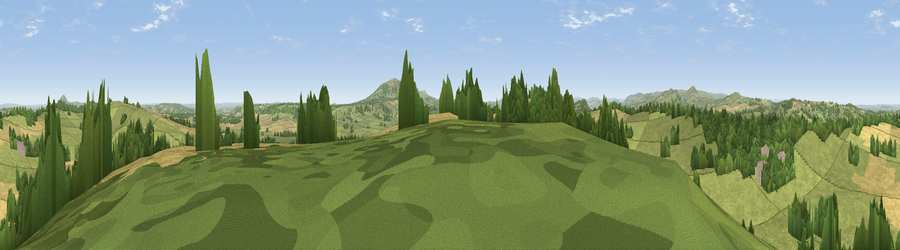

Viewpoint near Easthope
#14818 in England · top 44% of its area beats it · near Easthope · path 133 mWhere it is
The exact computed spot (SO 56275 94275). Click the marker for map links.
Public access: the nearest public right of way is about 133 m away — the final stretch may cross private land. Computed from Natural England's CRoW access layer and OpenStreetMap rights of way — not the legal definitive map. Always verify locally.
The view, rendered

A 360° render of this exact spot computed from the terrain model, tree cover and land cover — summer colours, afternoon light, calibrated against photographs of famous viewpoints. Real trees, hedges and buildings will differ in detail.
The panorama
Grey silhouette: terrain skyline in each direction (720 bearings, Earth curvature and refraction included). Dashed green: skyline with trees (+15 m) and buildings (+8 m) as obstacles. Blue strip: how far the ground is visible on each bearing.
Where the view opens
Wedge length = distance to the farthest visible ground on that bearing (vegetation-aware). Rings at 10, 25 and 50 km.
What fills the view
62% grassland · 20% cropland · 17% woodland · 1% built-up
Angular shares of the visible panorama (visual magnitude), not map area. Landscape diversity 0.42 (0–1 Shannon).
Key numbers
More beautiful places nearby
The staircase of upgrades: each row has a higher view potential than everything closer. Driving times are estimates from straight-line distance, calibrated against real road routing — check an actual route before setting out.
| Place | Direction | Drive | Score |
|---|---|---|---|
| Fegg Hill | SSW · 1 km | ~3 min | 68.0 |
| Hungerford Hill | SW · 5 km | ~11 min | 72.6 |
| Viewpoint near Bourton | NE · 5 km | ~11 min | 75.2 |
| Viewpoint near Bourton | NE · 5 km | ~11 min | 76.3 |
| Viewpoint near Harley | NE · 6 km | ~13 min | 76.8 |
| Viewpoint near Acton Burnell | NW · 7 km | ~14 min | 78.0 |
| Viewpoint near Harley | NE · 7 km | ~14 min | 79.9 |
| Viewpoint near Leebotwood | WNW · 7 km | ~15 min | 80.7 |
52.54456, -2.64619 · source: screening · position refined by local search. Computed location — check access rights before visiting.